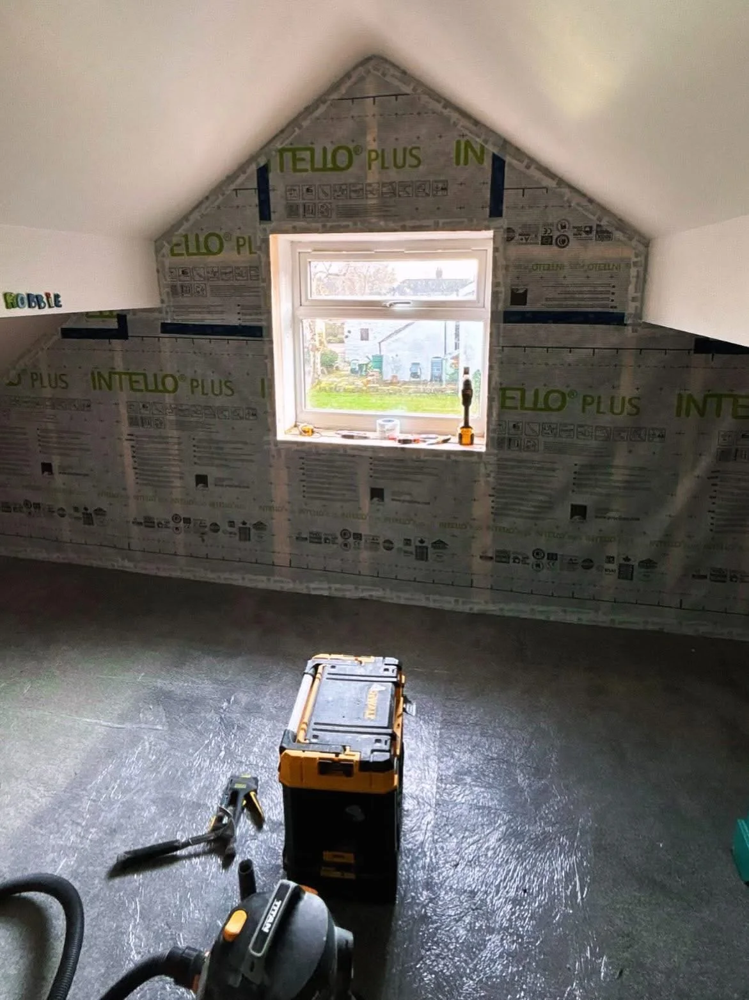

HOME INSULATION · NORTH WEST
From first fix
to finishing details.
See real work from JDR, including the stages normally hidden once a room is finished.
FEATURED PROJECT
What goes behind the finish.
Two stages of the same loft room: insulation fitted around the window, then the membrane fitted over it.


Insulation and interior work
Other recent project photos
FREE ASSESSMENT
Tell us about your home.
Tell us your postcode, which room or loft you’d like to improve. You can add photos in WhatsApp before you send your message.